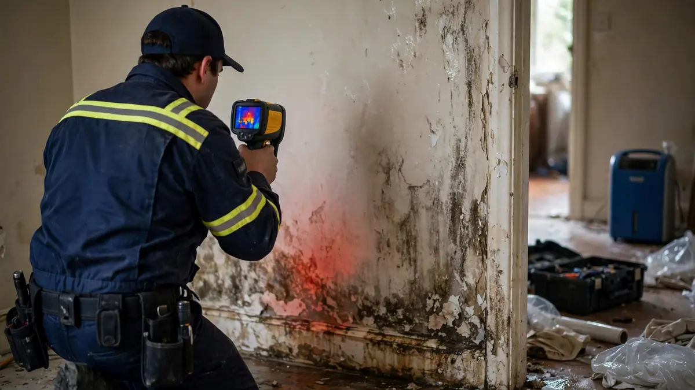

Guides · Oct 8, 2026 · 5 min read
How to Choose a Water Damage Company in Hollywood, FL
Here is an uncomfortable truth about how to choose a water damage restoration company: you are making the decision at the worst possible moment — stressed, possibly with water still on the floor, while three companies promise you the world over the phone. This guide is the conversation to have before that moment, or the five-minute version during it. The companies worth hiring all answer the same seven questions well. The ones to avoid reveal themselves fast.

How to Choose a Water Damage Restoration Company: Seven Questions
- "How fast can you actually get a crew here?" Not "we offer 24/7 service" — everyone says that. Ask for a realistic arrival window right now, today. Vague answers ("we'll get someone out to you") versus specific ones ("forty-five minutes to an hour") tell you everything about how the operation actually runs.
- "Who is doing the work — your crew or a subcontractor?" Nothing wrong with subs inherently, but you deserve to know who is walking through your door, and the person selling you the job should be accountable for the person doing it.
- "How do you decide what gets dried versus torn out?" The right answer involves moisture meters, material types, and contamination categories — a decision process. The wrong answer is "we'll have to see," or worse, an instant "we'll gut it" before anyone has measured anything. Gutting is sometimes correct; it should never be the default.
- "What does your documentation look like?" Photos, moisture readings with dates, equipment logs, a written scope. This paperwork is what your insurance claim runs on — thorough insurance documentation is the difference between a smooth claim and a six-week argument with an adjuster.
- "How do you handle my insurance claim?" Listen carefully: a good company documents thoroughly and communicates with your adjuster. A bad one promises your claim "will definitely be covered" — nobody can promise that except your carrier. Guaranteed coverage is a red flag wearing a friendly face.
- "What happens to my belongings?" Contents handling — what gets moved, where it goes, how it is protected, and who is responsible if it is damaged — should be discussed before anything leaves the room, not after.
- "How will I know when it is actually dry?" "We'll check on it" is not an answer. Moisture readings against documented dry standards, with numbers you can see, is the answer. If they cannot explain how they verify dryness, they cannot verify it.
Red Flags That Should Make You Hang Up
- Demanding full payment upfront before any work begins. Deposits are normal; full prepayment is not.
- Refusing to put the scope in writing. Verbal promises evaporate; written scopes do not.
- Pressure to sign an assignment of benefits. Signing over your insurance claim rights to a contractor is a serious legal step — in Florida especially, understand exactly what you are signing before you sign anything.
- No interest in the source of the water. A company that wants to start drying before asking where the water came from is treating symptoms.
- One-size-fits-all pricing quoted over the phone before anyone has seen the loss. Real scopes come from real measurements.
Local Company vs. National Franchise
Both can be excellent; both can be terrible. What actually matters: who answers the phone at 2 a.m., how far the crew travels, and whether the person assessing your loss has done it a thousand times. A local crew knows Hollywood's housing stock — the polybutylene era, the slab construction, which neighborhoods flood first. A national franchise brings standardized process. Judge the crew in front of you, not the logo on the truck — and read about our approach to see what a thorough local response looks like in practice.
The Estimate Conversation
For emergency mitigation, expect work to start before a final number exists — that is normal, because the full scope is not known until moisture mapping is done. What is not normal: no written scope at all, line items you cannot understand, or a price that doubles without explanation. Ask how change orders are handled before they happen. And keep every document — photos, readings, invoices, all of it — in one folder from day one.
Frequently Asked Questions
Should I get multiple estimates for emergency water damage?
For active water, no — get the water stopped and extraction started with a competent company first; you can get competing bids on the repair and rebuild phase later. Shopping for the cheapest emergency response while water spreads is how small claims become big ones.
What certifications should I look for?
Industry training credentials, such as IICRC certifications for technicians, indicate professional education — but they are one data point among many. A certified tech with sloppy documentation is worse than a veteran with meticulous records. Ask about both.
Can a restoration company work directly with my insurance?
They can document, communicate, and submit paperwork — and good ones do it routinely. What they cannot do is approve your claim or guarantee coverage. Anyone who says otherwise is selling, not informing.
What if I am not happy with the work?
Raise it immediately, in writing, with specifics — "the hallway wall still reads wet on the meter" beats "I'm not satisfied." Document the concern the same way you documented the loss. Reputable companies would rather recheck a reading than lose a reputation.
How do I verify a company is legitimate?
Check state business registration, ask for proof of general liability insurance, read recent reviews across multiple platforms rather than just the testimonials on their site, and confirm the physical address is real. Ten minutes of verification before hiring beats ten weeks of regret after.
Still weighing options? Contact us with the seven questions above — the answers will tell you what you need to know.